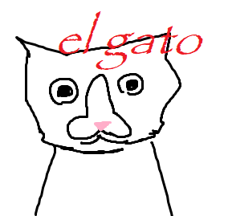
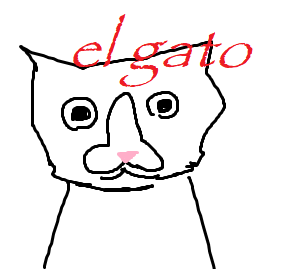

El Gato
Criado sábado 16 julho 2022
EL GATO é uma entidade que se parece com um gato com um formato de pinto na cara que foi criada no paint por Yob e que de alguma forma ganhou poderes magicos.
o EL GATO quer o mundo antigo de onde ele nasceu e ele quer repitir a mesma coisa ele quer explodir tudo todas as criatura tudo e fazer as dungeon ocupar o mundo todo pra ter o mundo antigo
ai ele traz a gente amigo do criador dele pra gente ajudar ele e ele ter mais conhecimento na epoca
pq o el gato tava preso na forma de uma imagem e so foi exisyir depois que foderam as magia e monte de imagem ficou viva


 



Backlinks: Conceito